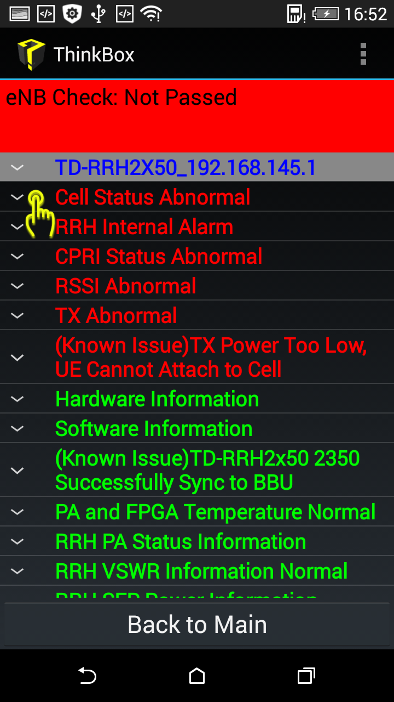
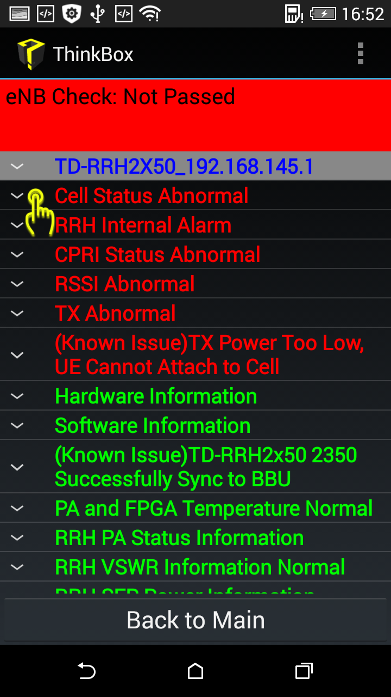
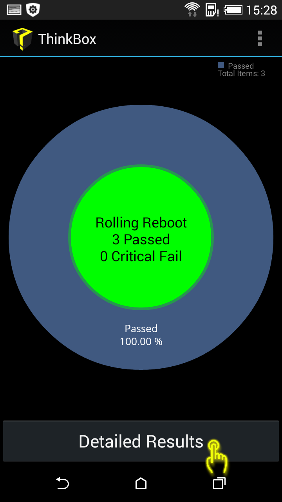
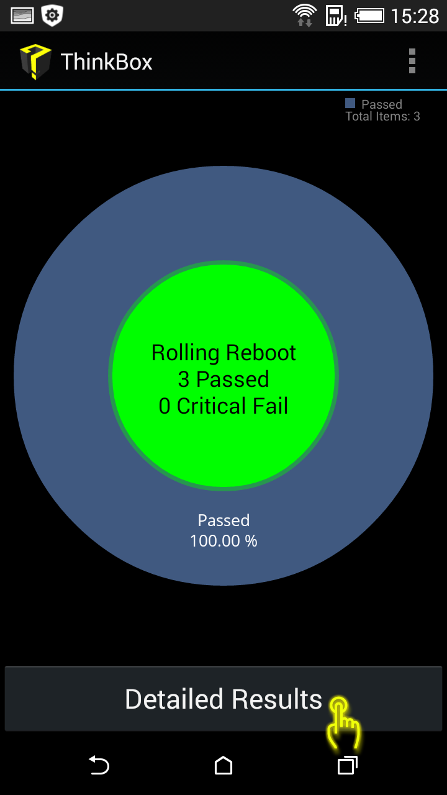

5
s left to show next image
1/4
To use ThinkBox App, you need configure your Wi-Fi connection first,
click Wi-Fi module in Setting menu to enter cconfigure it.
2/4
Choose the Wi-Fi hotspot created by your ThinkBox Connector, whose SSID is begin with "THINKBOX".
3/4
Enter the password to connect to ThinkBox Connector.
4/4
Once it shows "Connected", you have succeed in Wi-Fi initialization
5
s left to show next image
1/11
This "Check Board" function is used to check the current operating state of C board,
SOC board, B board and RRH.
Click "Board Check" button from home screen to begin this function.
2/10
In this image, C board is chosen for checking,
click the board name can select board.
3/11
click to select the type of C board that you want to test,
and make sure that ThinkBox-connector has connected correctly to the corresponding board.
4/11
Once you click the "Connection check",
ThinkBox-App will automatically detect the Wi-Fi connection,
adjust the baud rate, login to the C board.
5/11
Once you click the "Connection check",
ThinkBox-App will automatically detect the Wi-Fi connection,
adjust the baud rate, login to the C board.
6/11
You can just check current board, or check all modules, in the demo we click "Check All Modules".
7/11
Choose the modules you want to check and then click the "OK" button to begin check.
8/11
ThinkBox-App will start to check the selected modules.
9/11
When finishes checking,
ThinkBox-App will show the results by a pie chart on the screen,
click "Detailed Results" can view more detailed information.
10/11
The detailed results include the running state, and whether each checking item is normal or not.
In specific, green color idicates it runs normally,
yellow idicates this item has something wrong but not critical,
and red means it is very critical error.
Click each item can see full detail of it.
11/11
Once clicked, the full detail of one check item will be presented.

 


5
s left to show next image
1/12
This "Check Board" function is used to check the current operating state of C board,
SOC board, B board and RRH.
Click "Board Check" button from home screen to begin this function.
2/12
Click the "RRU" icon of navigation bar in buttom to check RRH directly.
3/12
Click the board name can select board.
4/12
click to select the type of RRH board that you want to test,
and make sure that ThinkBox-connector has connected correctly to the corresponding board.
5/12
Once you click the "Connection check",
ThinkBox-App will automatically detect the Wi-Fi connection,
adjust the baud rate, login to the RRH board.
6/12
Once you click the "Connection check",
ThinkBox-App will automatically detect the Wi-Fi connection,
adjust the baud rate, login to the RRH board.
7/12
After logining, you need to choose the release of your RRH board and click "OK".
8/12
Click "Check Current Board" to begin check.
9/12
ThinkBox-App will start to check the RRH.
10/12
When finishes checking,
ThinkBox-App will show the results by a pie chart on the screen,
click "Detailed Results" can view more detailed information.
11/12
The detailed results include the running state, and whether each checking item is normal or not.
In specific, green color idicates it runs normally,
yellow idicates this item has something wrong but not critical,
and red means it is very critical error.
Click each item can see full detail of it.
12/12
Once clicked, the full detail of one check item will be presented.
5
s left to show next image
1/10
This function is used to check serial port output of C board,
SOC board,B board and RRH while booting to analysis boot issues.
Click "Boot Check" button from home screen to begin this function.
2/10
In this image, C board is chosen for checking,
click the board name can select board.
3/10
click to select the type of C board that you want to test,
and make sure that ThinkBox-connector has connected correctly to the corresponding board.
4/10
Because of boot issues,
ThinkBox cannot read SN from the board,
user need to input SN manually after click "Check Serial Port Connection",then click "OK"
5/10
Once you click the "OK”,
ThinkBox-App will automatically detect the Wi-Fi connection,
adjust the baud rate, login to the C board.
6/10
Power on or off the board according to the App's hint
7/10
ThinkBox-App will automaticlly collect log during C board boots (record 3 times of boot),
8/10
When finishes checking,
ThinkBox-App will show the results by a pie chart on the screen,
click "Detailed Results" can view more detailed information.
9/10
The detailed results include the boot check result, and whether each checking item is normal or not.
In specific, green color idicates it runs normally,
and red idicates it is error.
Click each item can see full detail of it.
10/10
Once clicked, the full detail of one check item will be presented.
 

←
Plug Ethernet cable to this port of ThinkBox-Connector
←
Plug Ethernet cable to this debug port of eCCM2-HR (port 1 of the Ethernet port)

←
Plug Ethernet cable to this debug port of 8x20 RRH (the LMT port)